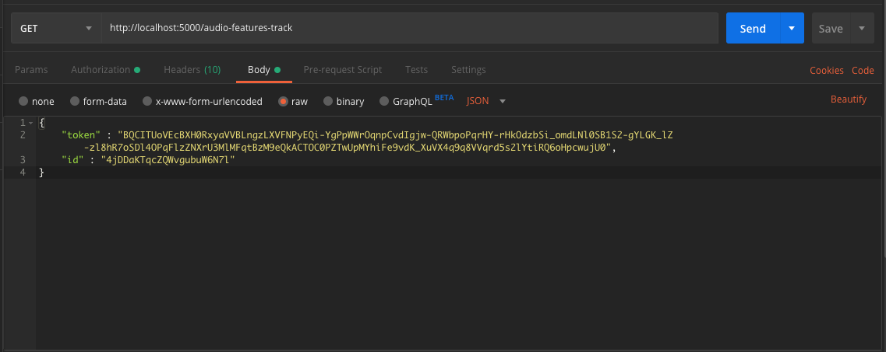
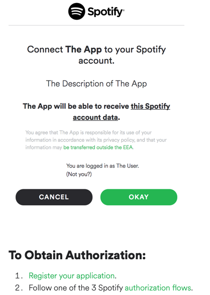
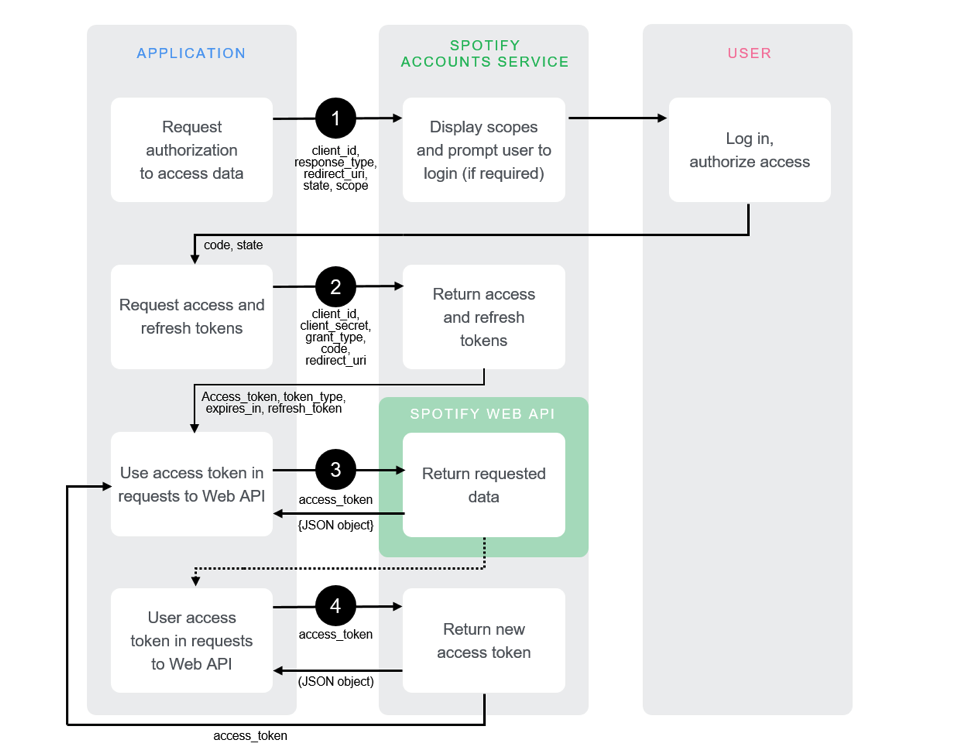
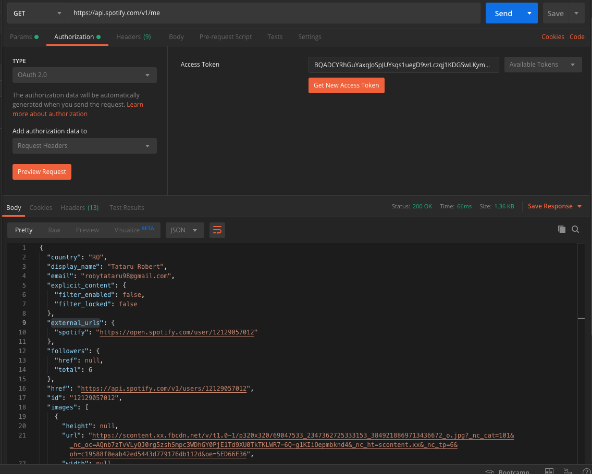
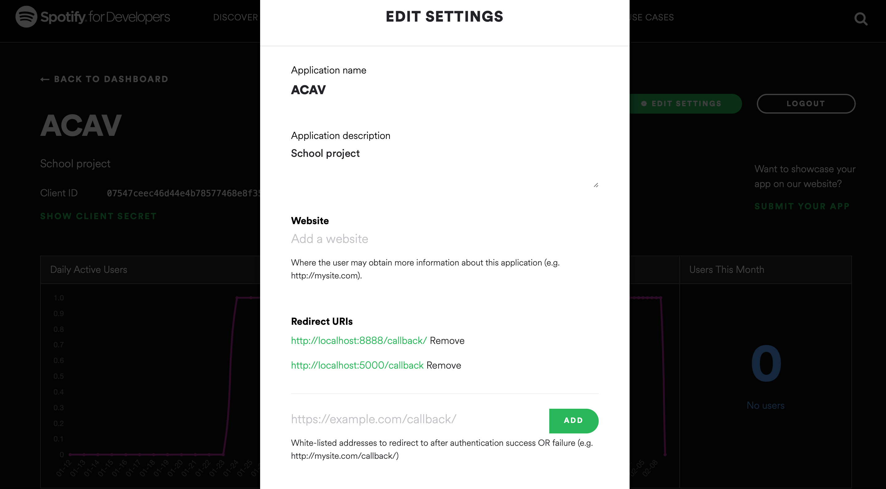
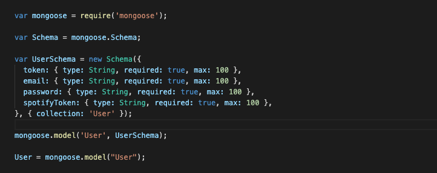

The app will use Web micro-services offering ways to visualize music content listened/shared by specific groups of users -- the info will be taken from specific streaming services. As examples of visualisations: a graph showing favourite songs listened by a group of people in a specific geographical spot or having similar preoccupations, the relations between similar songs based on the metadata provided, the generation of groups with similar interests. The visualisations will be available for download in PNG and SVG formats.
For a user to use the app he will need to authenticate and his id will be saved in session. First he should configure his profile by linking to his spotify account in order to get acces to his favourite songs. From there he will be able to see different graphs about specific groups of people and their taste in music.
Microservices architecture is an architectural style where the entire application is divided and designed as loosely-coupled, independent services modeled around a business domain.
This microservice is going to take care of the connection with the database, therefore it will bring endopoints for
login, register and updating the token of a specific user.
Examples of Endpoints:
POST: "http://localhost:4000/login"
PUT: http://localhost:4000/update-spotify-token"
The Spotify manager takes care of the interaction of the app with the spotify Api, from the authentication to getting all sorts of specific data.
Examples of Endpoints:
GET: "http://localhost:5000/login"
GET: "http://localhost:5000/top-playlist-countries"

The app uses the spotify Api for bringing all the content for the graphs. In order to make calls to the spotify app, an a authorization flow must take place. This authorization flow is going to provide an expiring token, used for the OAuth2. The flow looks like this:   An example of Api Call with its result  Also for the api to work we need to mark our app as an safe on the spotify's dashboard: 
The model used is pretty simple one, since the app doesn't require to store a whole lot of complexity. We used Mongoose as an ODM, for an easier interaction with the CRUD commands. The Schema used looks like this: 